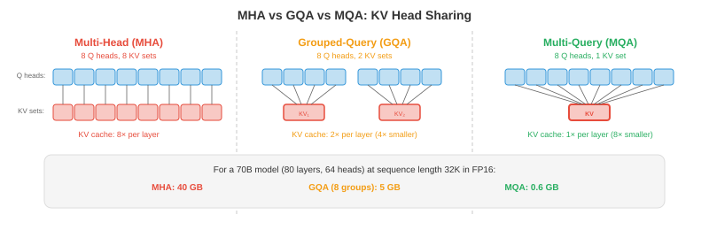

Efficient Architectures¶
提升模型速度不仅仅依靠更低的精度，还需要更智能的架构——减少每个 token 的计算量。本文涵盖 StreamingLLM、稀疏和线性 attention、multi-query 和 grouped-query attention、inference 阶段的 Mixture of Experts、知识蒸馏、pruning 以及神经架构搜索。
- Quantisation（第 1 文件）使每次操作更便宜。本文使操作本身减少发生。两者相辅相成：一个既在架构上高效又经过量化的模型，可以比原始模型快 10-100 倍。
StreamingLLM：无限长度生成¶
-
标准 transformer 将所有前序 token 存储在 KV-cache 中，随序列长度线性增长。某个时刻，缓存会超出 GPU 内存，生成失败。StreamingLLM（Xiao 等，2023）通过固定大小的 滚动 KV-cache 解决了这一问题。
-
关键观察：序列中最前面的几个 token 无论内容如何都会获得不成比例的高 attention 分数。这些被称为 attention sinks。如果将它们从缓存中驱逐，attention 分布就会崩溃，生成质量会灾难性地降低。
-
StreamingLLM 的解决方案：在缓存中永久保留少量 sink tokens（最前面的 1-4 个 token），加上最近 \(w\) 个 token 的 滚动窗口。总缓存大小为 \(\text{sink} + w\)，无论已生成多少 token 都固定不变。
-
Attention sinks 锚定 softmax 分布，滚动窗口提供近期上下文。这以常量内存实现 无限长度生成，代价是无法访问序列中间的上下文。
-
StreamingLLM 无需任何重新训练即可用于自然发展出 attention sinks 的模型（大多数预训练 LLM 都会）。对于没有的模型，在训练期间添加一个可学习的 sink token 即可解决。
Sparse Attention¶
- 全自注意力在序列长度 \(n\) 上是 \(O(n^2)\) 的，因为每个 token 都关注其他每个 token。对于 \(n = 128K\)，attention 矩阵有 \(128K^2 = 160\) 亿个条目。Sparse attention 模式通过限制哪些 token 关注哪些 token 来减少这一问题。

-
滑动窗口 attention（Mistral、Gemma）：每个 token 只关注前 \(w\) 个 token（例如 \(w = 4096\)）。Attention 是 \(O(n \cdot w)\) 而非 \(O(n^2)\)。信息通过多层在窗口之外传播：\(L\) 层后，有效上下文为 \(L \times w\)。
-
局部 + 全局 attention（Longformer、BigBird）：大多数 token 使用滑动窗口 attention（局部），但少数指定 token（如 [CLS]、每第 512 个 token）关注所有 token（全局）。这既捕获了局部模式，也捕获了长程依赖。
-
膨胀 attention：在窗口内以每隔 \(k\) 个 token 的方式关注，创建一种以相同 attention 分数覆盖更大范围的稀疏模式。跨层增加膨胀率会创建类似于膨胀卷积（第 8 章）的层次模式。
-
现代 LLM 实用的赢家是 滑动窗口 + 全 attention 交错：某些层使用滑动窗口（便宜，处理局部上下文），某些层使用全 attention（昂贵，捕获长程）。Mistral/Mixtral 使用这种模式。
线性 Attention 与状态空间模型¶
-
能否完全替换 \(O(n^2)\) attention？线性 attention 和 状态空间模型（SSM）通过避免显式 attention 矩阵，以 \(O(n)\) 时间处理序列。
-
线性 attention 用 kernel 近似替换 softmax attention：
-
通过先结合 \(K^T V\) 乘积（其维度为 \(d \times d\)，与序列长度无关），计算变为 \(O(n \cdot d^2)\) 而非 \(O(n^2 \cdot d)\)。对于 \(n \gg d\) 的长序列，这是巨大的节省。
-
RWKV 结合了 RNN 和 transformer 的思路。它使用一种循环表达式，顺序处理 token（像 RNN），但在训练期间可以并行化（像 transformer）。Inference 每个 token 是 \(O(1)\)（常量内存，无 KV-cache 增长）。
-
Mamba（Gu & Dao，2023）是一个选择性状态空间模型。它通过学习的状态转移处理序列：
-
其中 \(\bar{A}\) 和 \(\bar{B}\) 依赖于输入（选择性），允许 Mamba 动态地专注或忽略部分输入。与固定 SSM 不同，选择性使 Mamba 在语言任务上与 transformer 竞争，同时保持 \(O(n)\) 缩放。
-
权衡：线性 attention 和 SSM 在长序列上速度更快，但对于需要精确长程检索的任务，通常不如全 attention 强大。混合架构（部分 transformer 层 + 部分 Mamba 层）通常能获得两者的优点。
Multi-Query 和 Grouped-Query Attention¶
-
标准多头 attention（MHA，第 7 章）为每个头使用独立的 \(K\)、\(V\) 投影。对于 \(h\) 个头，这意味着 KV-cache 中有 \(h\) 个独立的 key 和 value tensor。Multi-Query Attention（MQA）和 Grouped-Query Attention（GQA）减少了这一点。
-
MQA（Shazeer，2019）：所有头共享一组 \(K, V\) 投影。每个头仍有自己的 \(Q\) 投影。KV-cache 缩小了 \(h\) 倍（例如，32 个头缩小 32 倍）。
-
GQA（Ainslie 等，2023）：折中方案。头被分组，每组共享一组 \(K, V\) 投影。对于 \(h = 32\) 个头和 \(g = 8\) 个组，每组 4 个头共享 K/V。KV-cache 缩小 \(h/g = 4\) 倍。

- 大多数现代 LLM 使用 GQA（Llama 2/3、Gemma、Mistral）。与 MHA 相比，它以可忽略的质量损失减少了 KV-cache 内存和 inference latency。
Multi-head Latent Attention（MLA）¶
- MLA（DeepSeek-V2，2024）通过将 KV-cache 压缩到 低秩隐空间 超越了 GQA。MLA 不是缓存完整的 key 和 value 向量，而是缓存每个 token 的压缩隐向量 \(\mathbf{c}_t\)，并在 attention 期间即时重建 K/V：
-
压缩向量 \(\mathbf{c}_t\) 比原始 K 和 V 合并后小得多。DeepSeek-V2 与 MHA 相比实现了 93.3% 的 KV-cache 大小减少，甚至超越了 MQA，同时保持 MHA 级别的质量。
-
权衡：从隐层重建 K/V 增加了每次 attention 操作的少量计算成本。但由于 LLM 解码受内存带宽而非计算限制，这是净收益：加载的内存减少 > 每个 token 稍多的计算。
Flash Attention¶
-
Flash Attention（Dao 等，2022，在第 16 章第 5 文件中详细介绍）不是一种架构变更，而是一种实现优化，但在任何关于高效 attention 的讨论中都值得提及。它计算完全标准 attention，具有：
- O(n) 内存而非 O(n²)（attention 矩阵从未在 HBM 中实体化）。
- 比标准 attention 快 2-4 倍（通过分块和在线 softmax 将数据保存在 SRAM 中）。
- 无质量损失——输出与标准 attention 在数学上完全相同。
-
Flash Attention 现在是 PyTorch（
torch.nn.functional.scaled_dot_product_attention）、JAX 和所有主要 inference 框架中的默认 attention 实现。如果你在 2024 年后运行 attention，几乎可以确定在使用 Flash Attention。
Ring Attention¶
-
Ring Attention（Liu 等，2023）将 attention 计算分布到多个设备上，用于序列过长以至于即使使用 Flash Attention 也无法放入单个 GPU 内存的情况。
-
思路：将序列分割到 \(N\) 个设备上。每个设备持有 \(n/N\) 个 token 的 Q、K、V。设备排列成一个环。在每一步：
- 每个设备计算本地 attention（其 Q 对本地 K/V）。
- 每个设备将其 K/V 块发送给环中的下一个设备。
- 每个设备从前一个设备接收 K/V 并计算 attention。
- \(N\) 步后，每个设备都关注了每个 K/V 块。
-
通信与计算 重叠：在计算当前 K/V 块上的 attention 时，下一个块正在传输。这几乎完全隐藏了通信 latency。
-
Ring Attention 通过在 GPU 环中分布 KV-cache，使 百万 token 上下文窗口 成为可能。每个设备的内存为 O(n/N)，使任意长的序列成为可行（仅受设备数量限制）。
Inference 阶段的 Mixture of Experts¶
-
MoE 模型（第 7 章）每个 token 只激活一部分参数（通常是 8 个专家中的 2 个）。在 inference 时，独特的挑战是 专家缓存：所有专家必须在内存中（因为任何 token 都可能路由到任何专家），但每个 token 只有 2 个处于活跃状态。
-
对于 Mixtral 8x7B 模型：总参数 = 47B（8 × 7B 专家，但有共享组件）。每个 token 的活跃参数约 13B（2 个专家 + 共享层）。该模型具有 LLM-70B 级别的质量，但只有 LLM-13B 级别的 inference 成本，但需要在内存中保留 47B 参数。
-
专家卸载：对于 GPU 内存受限的 deployment，将不活跃的专家保存在 CPU 或 SSD 上，按需加载。这是可行的，因为 token 路由是可预测的，足以预取可能使用的专家。
-
专家缓存：在 GPU 内存中维护最近使用专家的 LRU 缓存。如果相同的专家被反复激活（对于领域内数据很常见），缓存命中率很高。
Knowledge Distillation¶
- Distillation（第 6 章）训练一个小型"学生"模型来模仿大型"教师"。学生从教师的软预测（各类别的概率分布）中学习，这比单独的硬标签包含更多信息。
-
其中 \(T\) 是温度（更高的 \(T\) 软化分布，揭示教师的不确定性），\(\alpha\) 平衡 distillation loss 与标准交叉熵 loss。
-
对于 LLM：distillation 用于从大型强大模型创建小型快速模型。GPT-4 → 一个 7B 的学生，捕获 GPT-4 在特定任务上的大部分行为。学生的 serving 成本可以低 10-100 倍。
-
特定任务 distillation：仅在与你的 deployment 任务相关的数据上进行 distillation。一个从 70B 教师在医学问答上 distillation 的 7B 模型，在该特定任务上可以超越 70B 模型（因为学生有限的容量完全专注于目标领域）。
Pruning¶
-
Pruning 移除不必要的权重（将其设为零），减少模型大小和计算量。
-
非结构化 pruning（基于幅度）：移除绝对值最小的单个权重。这会创建一个稀疏权重矩阵。简单且对压缩有效，但当前硬件（GPU）无法有效加速稀疏操作，除非稀疏性遵循特定模式。
-
结构化 pruning：移除整个单元——attention 头、MLP 神经元或层。这产生一个更小的密集模型，可以直接在标准硬件上加速。权衡是粒度较粗（移除整个头可能同时移除有用和无用的权重）。
-
2:4 稀疏性（NVIDIA Ampere+）：一种硬件支持的稀疏模式，每 4 个权重中有 2 个为零。GPU 的稀疏 Tensor Core 跳过零乘法，实现约 2 倍加速。这是今天唯一有实际硬件加速的稀疏模式。
-
彩票假设（Frankle & Carlin，2019）：在随机初始化的网络中，存在一个子网络（"中奖票"），可以单独训练以匹配完整网络的性能。找到这些子网络（通过训练、pruning 和重绕）是昂贵的，但这一洞见推动了 pruning 研究。
神经架构搜索（NAS）¶
-
NAS 通过在可能的架构空间中搜索来自动化架构设计，在硬件约束（latency、内存、功耗）下找到最大化精度的架构。
-
EfficientNet（第 8 章）是通过 NAS 发现的：复合缩放规则（平衡深度、宽度、分辨率）来自搜索，而非人类直觉。
-
对于 inference 效率，NAS 可以找到针对特定硬件目标优化的架构："在 iPhone Neural Engine 上找到 latency <5ms、ImageNet 精度 >80% 的模型。" 搜索空间包括层类型、宽度、激活函数和 attention 模式。
-
一次训练网络训练一个单一的超参数网络，并为不同 deployment 目标提取子网络。一次训练产生适用于 cloud GPU、移动 GPU 和 CPU 的模型，每个都针对其目标进行了优化。
编程任务（使用 CoLab 或 notebook）¶
-
实现滑动窗口 attention 并与全 attention 比较内存使用。
import jax import jax.numpy as jnp def full_attention(Q, K, V): """标准 O(n^2) attention。""" scores = Q @ K.T / jnp.sqrt(Q.shape[-1]) weights = jax.nn.softmax(scores, axis=-1) return weights @ V def sliding_window_attention(Q, K, V, window_size=128): """滑动窗口 attention：每个 token 关注前 window_size 个 token。""" n = Q.shape[0] d = Q.shape[-1] output = jnp.zeros_like(Q) for i in range(n): start = max(0, i - window_size + 1) k_window = K[start:i+1] v_window = V[start:i+1] scores = Q[i] @ k_window.T / jnp.sqrt(d) weights = jax.nn.softmax(scores) output = output.at[i].set(weights @ v_window) return output n, d = 512, 64 key = jax.random.PRNGKey(0) Q = jax.random.normal(key, (n, d)) K = jax.random.normal(jax.random.PRNGKey(1), (n, d)) V = jax.random.normal(jax.random.PRNGKey(2), (n, d)) print(f"全 attention 内存: O(n^2) = {n*n} 个条目") print(f"窗口（w=128）内存: O(n*w) = {n*128} 个条目") print(f"减少了: {n*n / (n*128):.1f} 倍") -
比较 MHA、GQA 和 MQA 的 KV-cache 大小。展示为什么 GQA 是实用的最优点。
def kv_cache_size(n_heads, n_kv_heads, d_head, seq_len, bytes=2): """KV-cache 大小（MB）。""" return 2 * n_kv_heads * d_head * seq_len * bytes / 1e6 n_heads = 32 d_head = 128 seq_len = 32768 mha = kv_cache_size(n_heads, n_heads, d_head, seq_len) # 32 个 KV 头 gqa = kv_cache_size(n_heads, 8, d_head, seq_len) # 8 个 KV 头 mqa = kv_cache_size(n_heads, 1, d_head, seq_len) # 1 个 KV 头 print(f"MHA（32 个 KV 头）: {mha:.0f} MB 每层") print(f"GQA（8 个 KV 头）: {gqa:.0f} MB 每层（小 {mha/gqa:.0f} 倍）") print(f"MQA（1 个 KV 头）: {mqa:.0f} MB 每层（小 {mha/mqa:.0f} 倍）") -
模拟结构化 pruning，从随机 attention 层移除最不重要的 attention 头，并测量输出变化。
import jax import jax.numpy as jnp key = jax.random.PRNGKey(0) n_heads, seq_len, d_head = 8, 64, 32 # 随机多头 attention 输出（每头一个） head_outputs = jax.random.normal(key, (n_heads, seq_len, d_head)) # 完整输出：拼接所有头 full_output = head_outputs.reshape(seq_len, n_heads * d_head) # 重要性：通过范数测量每个头的贡献 head_norms = jnp.linalg.norm(head_outputs, axis=(1, 2)) print("头重要性（按范数）:", jnp.round(head_norms, 2)) # 剪掉最不重要的头 for n_keep in [8, 6, 4, 2]: top_heads = jnp.argsort(head_norms)[-n_keep:] pruned = head_outputs[top_heads].reshape(seq_len, n_keep * d_head) # 填充到原始大小进行比较（将剪掉的头置零） full_pruned = jnp.zeros_like(head_outputs) full_pruned = full_pruned.at[top_heads].set(head_outputs[top_heads]) full_pruned = full_pruned.reshape(seq_len, n_heads * d_head) error = jnp.linalg.norm(full_output - full_pruned) / jnp.linalg.norm(full_output) print(f"保留 {n_keep}/{n_heads} 头: 相对误差 = {error:.4f}，" f"内存 = {n_keep/n_heads:.0%}")